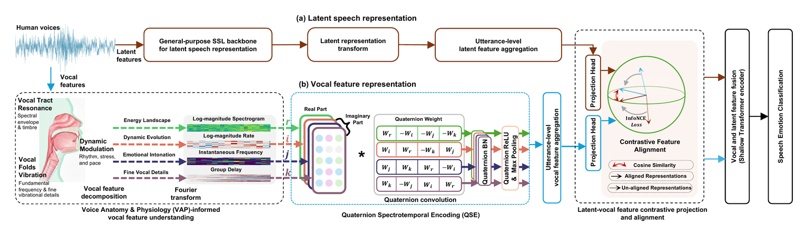

PhysioSER: Learning Physiology-Informed Vocal Spectrotemporal Representations for Speech Emotion Recognition
Xu Zhang, Longbing Cao, Runze Yang, Zhangkai Wu
arXiv:2602.13259 (2026)
Also indexed in: Semantic Scholar · OpenAlex · dblp

Quick facts
| Method name | PhysioSER |
|---|---|
| Authors | Xu Zhang, Longbing Cao, Runze Yang, Zhangkai Wu |
| Published in | arXiv:2602.13259 (2026) |
| arXiv | arXiv:2602.13259 (DOI 10.48550/arXiv.2602.13259) |
| Task | Speech emotion recognition (SER), utterance level |
| Model type | Compact plug-and-play module on top of a frozen self-supervised (SSL) speech backbone |
| Inputs | Physiology-informed amplitude and phase views (vocal-tract filter and glottal source) |
| Mechanism | Quaternion embedding + Hamilton-structured quaternion convolutions; Contrastive Projection and Alignment with the SSL branch; shallow attention fusion head |
| Evaluation | 14 datasets, 10 languages, 6 SSL backbones |
| Deployment | Real-time on a humanoid robotic platform |
| BibTeX key | zhang2026physioser |
Key points
- Most deep SER models use amplitude only; PhysioSER builds amplitude and phase views grounded in vocal-tract and glottal-source physiology and models their interaction with Hamilton-structured quaternion convolutions.
- A Contrastive Projection and Alignment framework aligns the physiology branch with a frozen SSL backbone, followed by a shallow attention fusion head.
- Evaluated across 14 datasets, 10 languages, and 6 SSL backbones, and deployed in real time on a humanoid robotic platform.
Abstract
Speech emotion recognition (SER) is essential for humanoid robot tasks such as social robotic interactions and robotic psychological diagnosis, where interpretable and efficient models are critical for safety and performance. Existing deep models trained on large datasets remain largely uninterpretable, often insufficiently modeling underlying emotional acoustic signals and failing to capture and analyze the core physiology of emotional vocal behaviors. Physiological research on human voices shows that the dynamics of vocal amplitude and phase correlate with emotions through the vocal tract filter and the glottal source. However, most existing deep models solely involve amplitude but fail to couple the physiological features of and between amplitude and phase. Here, we propose PhysioSER, a physiology-informed vocal spectrotemporal representation learning method, to address these issues with a compact, plug-and-play design. PhysioSER constructs amplitude and phase views informed by voice anatomy and physiology (VAP) to complement SSL models for SER. This VAP-informed framework incorporates two parallel workflows: a vocal feature representation branch to decompose vocal signals based on VAP, embed them into a quaternion field, and use Hamilton-structured quaternion convolutions for modeling their dynamic interactions; and a latent representation branch based on a frozen SSL backbone. Then, utterance-level features from both workflows are aligned by a Contrastive Projection and Alignment framework, followed by a shallow attention fusion head for SER classification. PhysioSER is shown to be interpretable and efficient for SER through extensive evaluations across 14 datasets, 10 languages, and 6 backbones, and its practical efficacy is validated by real-time deployment on a humanoid robotic platform.
PDF: arXiv v1 preprint (arXiv:2602.13259), shared by the authors, who keep the copyright under arXiv's non-exclusive licence.
Frequently asked questions
What is PhysioSER?
A physiology-informed method for speech emotion recognition that builds amplitude and phase views of the voice from vocal anatomy and physiology, models their interaction with quaternion convolutions, and aligns them with a frozen self-supervised speech model.
Why model phase as well as amplitude?
Physiological research shows that the dynamics of vocal amplitude and phase correlate with emotion through the vocal tract filter and the glottal source, yet most deep SER models use amplitude only and never couple the two.
Can PhysioSER be added to an existing SSL model such as WavLM or HuBERT?
Yes. It is designed as a compact plug-and-play branch that complements a frozen SSL backbone; the two branches are aligned by Contrastive Projection and Alignment and fused by a shallow attention head.
How broadly was it tested?
Across 14 datasets, 10 languages, and 6 backbones, with real-time deployment on a humanoid robot.
How do I cite PhysioSER?
Cite it as: Zhang, X., Cao, L., Yang, R., & Wu, Z. (2026). Learning Physiology-Informed Vocal Spectrotemporal Representations for Speech Emotion Recognition. arXiv preprint arXiv:2602.13259. https://doi.org/10.48550/arXiv.2602.13259 BibTeX is available at https://codezx6.github.io/papers/physioser.html#cite and in https://codezx6.github.io/publications.bib.
中文摘要
学习生理信息引导的嗓音时频表示用于语音情感识别（PhysioSER）
语音情感识别对社交机器人与机器人心理评估等任务至关重要，但现有深度模型大多不可解释，且几乎只使用幅度信息。嗓音生理学表明，幅度与相位的动态通过声道滤波器和声门源与情感相关。PhysioSER 基于发声解剖与生理（VAP）构造幅度与相位视图，将其嵌入四元数域并用 Hamilton 结构四元数卷积建模二者交互；另一分支为冻结的自监督语音模型。两路话语级特征通过对比投影对齐框架对齐，再由浅层注意力融合头分类。在 14 个数据集、10 种语言、6 种骨干上验证了其可解释性与效率，并在人形机器人上实时部署。
关键词：语音情感识别；发声生理学；幅度与相位；四元数卷积；自监督语音模型；可解释；即插即用；多语言情感识别；人形机器人
Keywords
speech emotion recognition physiology-informed quaternion convolution amplitude and phase self-supervised speech models interpretable SER humanoid robot
Also referred to as: PhysioSER; physiology-informed speech emotion recognition; voice anatomy and physiology (VAP) features; amplitude and phase views for SER; quaternion convolution for speech emotion; Hamilton-structured quaternion convolution; Contrastive Projection and Alignment (CPA); plug-in emotion head for frozen SSL speech models; interpretable and efficient SER; multilingual speech emotion recognition 10 languages; speech emotion recognition on humanoid robots; glottal source and vocal tract filter emotion cues.
Related papers
Affective speech
- DUET: Unified Dual-Space Emotion Control for Diffusion and Flow-Matching Driven Text-to-Speech (arXiv:2606.00066 (2026))
Other topics
- DSTCN: Exploiting dynamic spatio-temporal correlations for origin-destination demand prediction (2026)
- S2CMEN: A Mutually Enhancement Network for Superpixel Segmentation and Classification of Hyperspectral Image (2025)
- MR-UFP: Enhancing urban flow prediction via mutual reinforcement with multi-scale regional information (2025)
- BiST-IF: Enhancing origin–destination flow prediction via bi-directional spatio-temporal inference and interconnected feature evolution (2025)
- Automatic visual recognition for leaf disease based on enhanced attention mechanism (2024)
- S3CFSL: Spatial-Spectral–Semantic Cross-Domain Few-Shot Learning for Hyperspectral Image Classification (2024)
- ST-CSL: Spatio-temporal fusion and contrastive learning for urban flow prediction (2023)
- MCSTL: Mask- and Contrast-Enhanced Spatio-Temporal Learning for Urban Flow Prediction (2023)
- URMDet-SimFire: Trustworthy multimodal detection with uncertainty and reliability modeling for fire and smoke analytics (2026)
Cite this paper
@article{zhang2026physioser,
title = {Learning Physiology-Informed Vocal Spectrotemporal Representations for Speech Emotion Recognition},
author = {Zhang, Xu and Cao, Longbing and Yang, Runze and Wu, Zhangkai},
journal = {arXiv preprint arXiv:2602.13259},
year = {2026},
eprint = {2602.13259},
archivePrefix= {arXiv},
primaryClass = {cs.SD},
doi = {10.48550/arXiv.2602.13259},
url = {https://arxiv.org/abs/2602.13259}
}Zhang, X., Cao, L., Yang, R., & Wu, Z. (2026). Learning Physiology-Informed Vocal Spectrotemporal Representations for Speech Emotion Recognition. arXiv preprint arXiv:2602.13259. https://doi.org/10.48550/arXiv.2602.13259